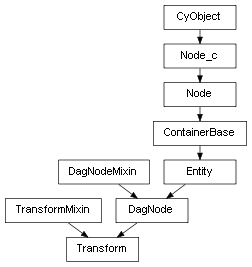

class cymel.core.cyobjects.transform.Transform¶

-
class
cymel.core.cyobjects.transform.Transform¶ ベースクラス:
cymel.core.cyobjects.transform_c.TransformMixin,cymel.core.cyobjects.dagnode.DagNodetransform ノードタイプラッパークラス。
固定引数無しでのクラスインスタンス生成時のノード生成をサポート。
Methods:
addChild(child[, r, add])子ノードを追加する。複数指定可能。 Attributes:
-
TYPE_BITS= 3¶ クラスでサポートしているノードの特徴を表す。
Methods Details:
-